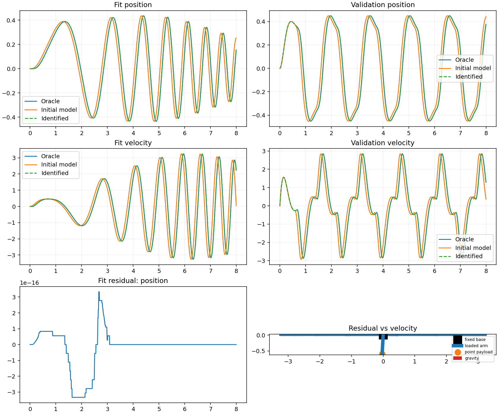

L1: Servo-driven loaded pendulum
This fixed run comes from l1-servo-loaded-pendulum-v2. For the guided explanation and exercise,
start with the L1 lesson.
The machine and its boundary
A fixed base holds one rotary servo, a uniform rigid arm (1.2 kg, 0.6 m), and a known point payload (0.35 kg). Gravity is 9.81 m/s². Angle zero points down; positive angle moves the payload right. The known inertia is 0.27 kg m², including both arm and payload.
q_des + joint state -> fixed PD controller -> command delay -> torque -> pendulum
The fixed controller computes kp * (q_des - q) - kd * internal velocity with
kp=8 N m/rad and kd=4 N m s/rad. Delay shifts the entire torque
command history after PD, including feedback. Fractional delays use linear
interpolation of sampled torque history; pre-reset commands are zero. Torque is
held over each 0.005 s interval while RK4 integrates gravity dynamics.
Filtering and rate limits are fixed to none.
The estimator receives only t, q_des, ideal encoder q, and qd derived by
centered position differences (one-sided at the endpoints). Internal velocity,
Oracle torque, and the delayed command buffer are privileged diagnostics.
Namespace lists, full excitation parameters, units, seed, synthetic timestamp
epoch, reset state and configuration hash are recorded in metrics.json.
The timestamp is a frozen synthetic epoch, not a claimed data-collection date.
How to read the evidence

Fit chirp and held-out reversals have different frequency/phase composition and both reset to q=0 rad, internal velocity=0 rad/s. Only the chirp enters optimization. Validation is evaluated once the fitted delay is selected. The separate machine panel shows a recorded validation frame, using the same angle array as the plots. The interactive timeline replays those arrays.
Curve key: Oracle solid black; Initial orange; Identified blue dashed with hollow markers; target dotted green-gray. Overlapping Oracle and Identified curves are expected in this matched benchmark. The torque row labels the pre-delay Oracle command and applied torques as evaluation-only diagnostics.
Residual means model - Oracle. The Initial model leaves repeating signed
lobes near reversal transitions; the residual-versus-velocity view exposes
structured timing error. A small time shift often gives an error proportional
to velocity, so correlation alone does not prove friction. The Identified
residual collapses here because the one-delay model matches the generator.
The fit-only local loss slice tests nine nearby delays with known mechanics held fixed. Its minimum provides local delay sensitivity evidence, not a confidence interval or proof of identifiability for arbitrary commands. Slow excitation can make the minimum shallow. Bounded least squares starts at the independent optimizer guess; if its unscaled combined q/qd cost exceeds 1e-8, seven evenly spaced public starts are tried and the lowest fit loss wins. No validation score or Oracle parameter chooses a start.
Parameters and held-out prediction
| Role | Effective delay | Mechanical parameters |
|---|---|---|
| Oracle (evaluation only) | 0.08000 s | fixed known arm and payload |
| Initial model | 0.00000 s | same known values |
| Identified Student | 0.08000 s | same known values |
Public bounds: [0, 0.2] s.
Optimizer start: 0.03 s, independent of the Initial model.
Fit success: True; solver message: `gtol termination condition is satisfied.`.
| Split | Initial q RMSE (rad) | Identified q RMSE | Initial qd RMSE (rad/s) | Identified qd RMSE |
|---|---|---|---|---|
| Fit chirp | 0.00442141 | 9.4514e-18 | 0.0177397 | 1.85405e-16 |
| Held-out reversals | 0.0308547 | 6.00653e-17 | 0.490069 | 1.10139e-15 |
Default acceptance thresholds: delay recovery error ≤ 1 ms and held-out q and
qd RMSE reduction ≥ 90%. This run's delay error is
6.93889e-17 s. Detailed improvements are in
metrics.json. These are matched synthetic benchmark thresholds, not hardware
accuracy guarantees. The fitted delay is effective, boundary-dependent and
sampling-dependent, not a physical motor constant.
Reproduce and understand the limits
From the repository root:
python -m synthetic.l1_servo_loaded_pendulum --output-dir reports/l1_servo_loaded_pendulum
The same configuration regenerates this report and metrics. Same-environment artifacts are deterministic; across CPU/library versions use 1e-8 absolute numerical tolerance for delays and metrics, and compare plot content rather than PNG bytes. Notebook and guided app use the same numerical module.
This synthetic, ideal observation lesson is not a motor-electromagnetic or whole-robot simulation and does not establish hardware transfer. Omitted effects include torque scale/bias, friction, saturation, compliance/backlash, sensor noise, voltage/temperature, contact, payload shifts and reflected motor inertia. Add friction or saturation only with concrete residual evidence; then move to a fixed-base leg for coupled dynamics.